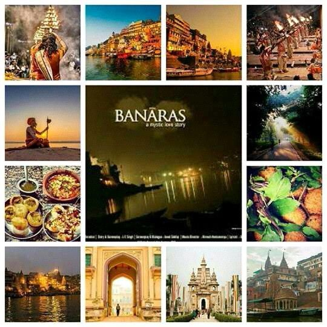

The City of Spirituality and Eternal Bliss
Varanasi, also known as Banaras or Kashi, is one of the oldest living cities in the world. It is famous for its ghats, temples, and rich cultural heritage. Located on the banks of the Ganges River, Varanasi is a major center for pilgrimage, spirituality, and education.
| Metric | Value |
|---|---|
| Population | 1.2 million |
| Area | 82 sq km |
| Average Temperature | 25°C |
"Varanasi is the spiritual heart of India. Its energy and history are unparalleled." - Radhe Shyam
"I find peace and inspiration every time I visit the ghats of Varanasi." - Nizam
"The cultural richness of Varanasi is something you have to experience to believe." - Emily Johnson
For more information, please contact our tourism office:
Email: nkhan@varanasi.com
Phone: +123-456-7890